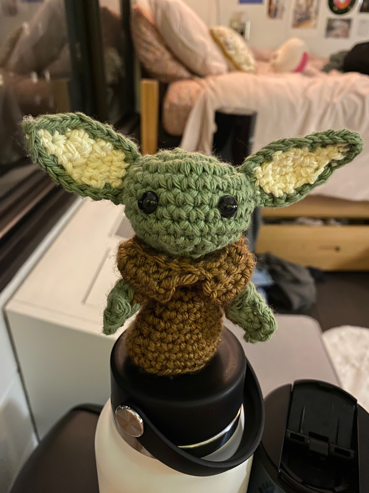
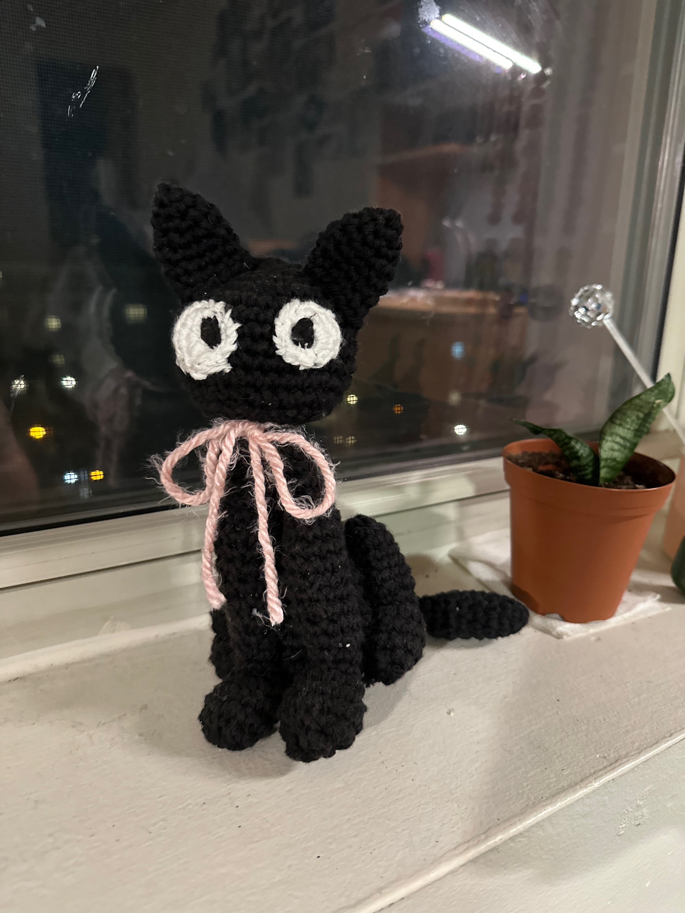

I have always been fascinated by crochet. Over the years, I’ve explored many aspects, including:
- Baby Yoda (Grogu) 
-
Totoro and Friends from My Neighbor Totoro

- Jiji from Kiki's Delivery Service 
I have always been fascinated by crochet. Over the years, I’ve explored many aspects, including: